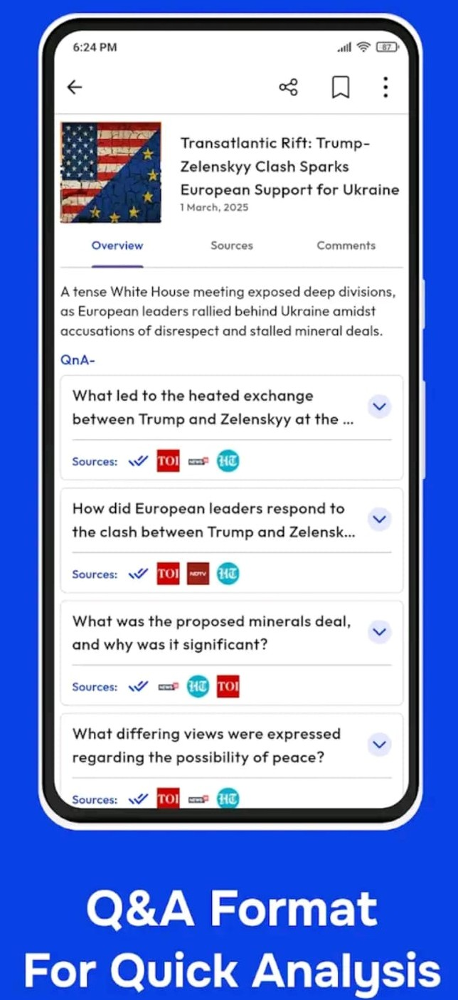
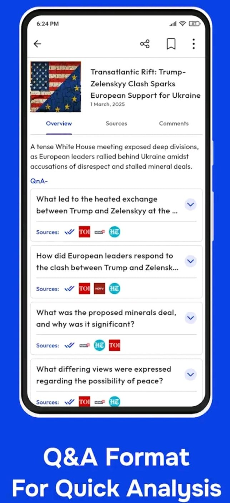

Hi, I'm Devansh
I have completed my Bsc in Data science and modern application from IIT Madras.
I love digging into messy, complex data and finding patterns that most people would miss. I find the process of using statistics or machine learning to uncover meaningful insights or make impactful forecasts quite rewarding.
My hobbies include football, movies, and the stock market, all of which you’ll see reflected in my projects, including forecasting and predicting, which, to be honest, excites me the most!
I’m currently working on EnView, an NLP and clustering-based news aggregator and analysis platform focused on summarizing and analyzing news coverage for contrasting information, bias, and narrative patterns across different Indian Sources.
![A professional headshot of [Your Name]](assets\images\portfolio try 1.JPG)
My Projects
 

EnView: AI News Analysis Engine
- Engineered an end-to-end AI pipeline (NLP, Clustering, LLM) to process, group, and analyze 5,000+ daily news articles from 10+ sources.
- Utilized cutting-edge clustering to identify and group articles on the same topic from different publishers.
- Utilised LLM to generate QnA summaries and perform bias analysis, highlighting contrasting narratives and information across sources.
- Created a sophisticated rank based recommendation Engine for personalised news feed based on user preferances and user interactions.


Nifty Weekly & Monthly Forecast
- Conducted quantitative and technical analysis on 1 year of Nifty daily data to forecast weekly and monthly market direction.
- Identified a statistically significant mean-reversion pattern, providing a "BEARISH" bias with a mid-term equilibrium target.
- Developed actionable trading strategies based on resistance levels, low ADX momentum, mean reverting tendency and overbought log-price z-score readings.


Smart Home Security AI
- Developed a real-time, multi-threaded CV system for smart home security, detecting intruders and fire with immediate mobile app alerts.
- Implemented an intruder-detection pipeline using live face recognition, matching every detected face against known household members and triggering alerts for unknown individuals.
- Deployed a custom-trained YOLO fire-detection model capable of identifying even small flames in real time with instant alerting.
- Orchestrated a high-speed Flask (REST API / WebSocket) backend to stream detection data to a Flutter app, ensuring instantaneous alerts.

Power BI Interactive Dashboard
- Built an interactive Power BI dashboard with dynamic filtering and drill-down analysis.
- Designed clean visuals showing category analysis and trend analysis.
EPL Season Simulation Model
- Built a robust multiclass goals predicting Machine learning model (AdaBoost) to simulate the 380-match 2021-22 Premier League season, accurately predicting 1st, 2nd, and 4th place.
- Trained the classifier on 4 seasons of match and player data to predict specific scorelines (home/away goals).
- Engineered predictive features from player ratings, team formations, and historical match-ups to fuel the model's accuracy.


Organic Food Store SKU & Sales Analysis
- Led a data-to-decision capstone project by engineering and analyzing primary business data to identify underperforming SKUs.
- Applied Market Basket Analysis (Apriori algorithm) to uncover product associations, driving targeted marketing campaigns.
- Identified a monsoon-driven sales drop via trend analysis and proposed a data-driven solution: a new delivery channel with low seasonal correlation.


User Retention & Churn Analysis for App Startup
- Consulted for an app startup, conducting in-depth user behavior analysis (user engagement analysis, screen frequency, churn, retention) in Python to identify key user behaviours.
- Identified high drop-off screens and recommended data-driven optimizations, including reducing ad frequency on specific pages and flagging problematic screens or app sections for improvement.
- Delivered targeted strategies, including user classification, to enhance user satisfaction and reduce churn rate.


Movie Recommendation System
- Built a content-based movie recommendation system using NLP (TF-IDF) and Cosine Similarity to find similar movies based on plot, cast, and genres.
- Developed a Flask backend with a REST API to serve real-time recommendations (poster, cast, release date) to a mobile app front-end.
- Achieved high-speed performance, delivering a full slate of similar movie recommendations in under a second.
Dengue Cases Prediction
- Achieved a **Top 3.5% global rank (500 / 15,000)** in an international DataDriven competition.
- Conducted exploratory data analysis (EDA) and performed feature engineering to create high-impact, predictive features from raw features.
- Utilized Tree-based classifiers (e.g., Random Forest, XGBoost) on the engineered features to accurately forecast weekly dengue cases.


Store Sales - Time Series Forecasting
- Achieved a **Top 12% world rank (83 / 722)** in a time series forecasting competition.
- Performed meticulous statistical analysis and visualization on complex time series data to identify seasonality, trends, and cyclical patterns.
- Implemented an Exponential Smoothing model, which outperformed more complex models by accurately capturing the core data components.

Reference image for statistical modelling
Student Enrolment Status Prediction
- Predicted student dropout with a high F1-score of 0.76 in a multi-class classification challenge.
- Utilized EDA and advanced feature engineering, including PCA for dimensionality reduction, outlier removal, and SMOTE for oversampling.
- Implemented a Gradient Boosting model to effectively classify student enrolment status based on the refined dataset.

Optiver - Trading at the Close
- Achieved a world rank of 2838/4436 in a highly complex quantitative finance (HFT) competition by Optiver.
- Applied advanced feature engineering techniques to a noisy, high-frequency dataset to create features with more predictive power
- Implemented an LGBM (Light Gradient Boosting) model and utilized Optuna for efficient hyperparameter tuning to optimize model parameters.


My Resume
A brief overview of my professional experience, skills, and education.
![A preview image of [Your Name]'s resume](assets\projectPictures\resume\resume pic.png)